| Provincias | Informacion |
|---|---|
| Pagina Principal | Leon |
| Avila |
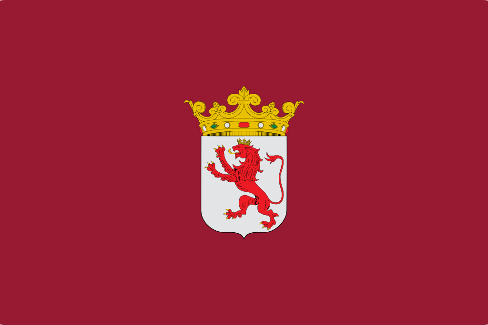
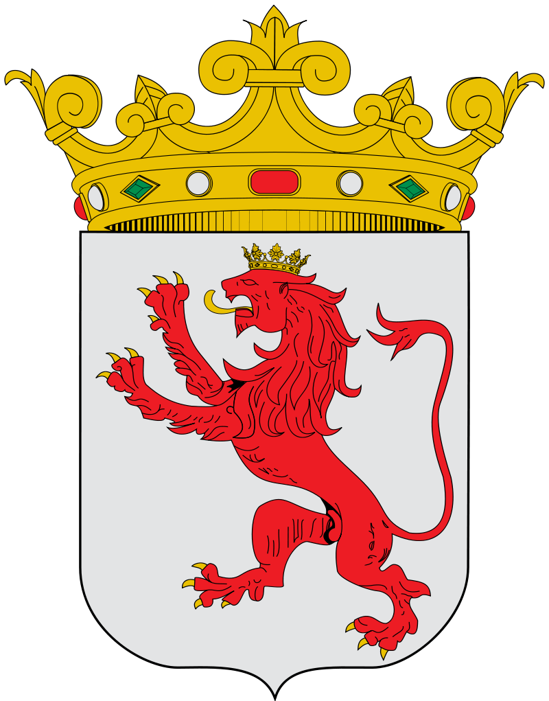
Video-presentacion Leon Si el video no se reproduce correctamente pulse aqui
LOCALIZACIONLa provincia de León se localiza en la parte noroccidental de la península ibérica, en la comunidad autónoma de Castilla y León (España). Limita por el norte con el principado de Asturias y con Cantabria, donde la cordillera Cantábrica juega el papel de frontera natural entre la meseta Norte y la costa cantábrica. Por el oeste, son distintas unidades del macizo Galaico-leonés quienes ejercen de frontera con las provincias gallegas de Orense y Lugo. Al sur limita con las provincias de Zamora y Valladolid y al este con la provincia de Palencia, sin que exista una frontera natural entre ellas. 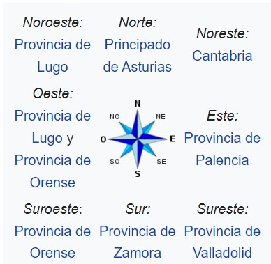 MapaSi el mapa superior no funciona haga click aqui Ir arribaLOCALIDADES PRINCIPALES
Ir arribaGEOGRAFIAEl relieve de la provincia se organiza en torno a tres grandes unidades morfológicas: la cordillera Cantábrica, el macizo Galaico-leonés y la Meseta. Las formaciones montañosas ocupan una parte importante del relieve, estando más del 50 % de la superficie total por encima de los 1000 metros de altitud. La cordillera Cantábrica está representada por el llamado macizo asturiano. De entre todo el conjunto destacan los Picos de Europa, donde los contrastes topográficos resultado de la orogenia hercínico-alpina se han visto acentuados por el encajonamiento de la red fluvial y donde encontramos cumbres que pasan de los 2500 m de altitud como Torre de Cerredo (2648 m) o Torre del Llambrión (2642 m. En la zona occidental, las alineaciones se disponen de oeste a este, dejando corredores fluviales que abrieron las depresiones que conforman las comarcas de Babia y Omaña. En el sector central, distintos cursos de agua abrieron valles transversales de disposición norte-sur, llegando a formar en algunas ocasiones gargantas como las Hoces de Vegacervera o las Hoces de Valdeteja. Los montes galaico-leoneses cierran a la provincia por el oeste, separándola de Galicia. Constituyen un abombamiento del antiguo macizo paleozoico que se fracturó en distintas unidades. En el centro de todas ellas se formó la hoya del Bierzo caracterizada por un paisaje de campiñas y vegas. Las cumbres son aplanadas, interrumpidas por alineaciones de crestones de cuarcitas y las formas glaciares se manifiestan con ejemplos de valles en U o con lagos como los de Truchillas y La Baña. El sector leonés de la Meseta ocupa la parte central y sureste de la provincia siendo el extremo noroeste de la cuenca sedimentaria que ocupa el interior de España. Con una altitud media entre 700 y 1000 metros de altitud, es un relieve casi horizontal de páramos con suaves ondulaciones tan sólo interrumpidos por terrazas e interfluvios, formados por los ríos que descienden, tanto de la cordillera Cantábrica como del macizo Galaico-Leonés. En la zona sur, sobre los materiales sedimentarios la erosión originó amplios valles con interfluvios que apenas destacan. Debido a su estructura montañosa, la provincia leonesa reparte su territorio entre tres cuencas hidrográficas: Cantábrico, Miño-Sil y Duero. La cuenca del Cantábrico representa tan sólo el 2,2 % de la superficie, limitándose, por un lado, a los valles de Sajambre y Valdeón, drenados por los ríos Sella y Cares, y por otro, a los valles de Balouta y Suarbol con los ríos Balouta y Moreira, que fluyen hacia el río Navia. La cuenca del Miño-Sil representa el 27,7 % de la superficie provincial y está separada de la cuenca del Duero por los Montes de León, a partir de los cuales, y hacia el oeste, se expande el sistema del Sil. Este, que nace a más de 1500 metros de altitud en la vertiente leonesa del puerto de Somiedo. La cuenca del Duero representa el 72,1 % de la superficie y tiene como eje principal el río Esla, uno de los principales afluentes del Duero con 5040 hm³ al año. A él vierten sus aguas la mayor parte de cursos fluviales de la cuenca a través de sus afluentes Porma, Bernesga, Cea y Órbigo. ClimaEn términos climáticos, la provincia de León sirve de transición entre la Meseta y las zonas montañosas. El clima predominante es el mediterráneo continentalizado, aunque matizado en algunas zonas, como el noroeste, de influencia atlántica, y la hoya berciana, de temperaturas más suaves. En general, son características una elevada amplitud térmica (desde los 12 a los 20 °C), inviernos fríos y largos, primavera y otoño cortos, heladas y veranos cortos y calurosos. Las precipitaciones se reparten de forma irregular a lo largo del año y dependiendo de la zona. Así, en la franja norte y noroeste se alcanzan los 1500 mm anuales mientras que en determinadas zonas del sur de la provincia apenas llegan a los 500 mm. Dichas precipitaciones se concentran sobre todo en otoño y primavera con un mínimo en verano. En cuanto a las temperaturas, en general es un clima frío debido a la altitud y la abundancia de heladas, siendo más intenso en las zonas montañosas llegando a alcanzar los -18 °C. Los veranos son cortos, siendo los días más calurosos entre el 15 de julio y el 15 de agosto en que se pueden llegar a superar los 30 °C. Si el widget superior no funciona haga click aqui Ir arribaHISTORIAFundacion y epoca RomanaLa ciudad de León surge hacia 29 a. C. como campamento militar romano de la Legio VI Victrix, en la terraza fluvial entre los ríos Bernesga y Torío, cerca de la ciudad astur de Lancia, con motivo de las llamadas guerras cántabras. Fue la única legión asentada en Hispania hasta la caída del Imperio Romano de Occidente, por lo que durante todo este tiempo León fue la capital militar de la Península. La ciudad perteneció al Convento Asturicense, con capital en Asturica Augusta, el cual formó parte de la provincia Tarraconense hasta el siglo III, cuando, con la creación de la provincia de Gallaecia, fue integrado en ésta. El trazado campamental romano original aún puede observarse en la actualidad, puesto que se conservan gran parte de las murallas que lo rodeaban en los siglos III y IV. Alrededor de las murallas que delimitaban el campamento fue creándose un núcleo civil paralelo, en EL que se asentaban todas las personas que se encargaban de cubrir las necesidades de los soldados. Por los restos arqueológicos se sabe que contaba con unas termas (con ruinas aún visibles bajo la catedral) e incluso un anfiteatro con capacidad para 5000 espectadores a extramuros. Suevos, Visigodos y MusulmanesTras el período romano, la ciudad formó parte del Reino suevo y posteriormente, tras su conquista, del Reino visigodo. Entre los siglos VI y VIII la escasez de evidencias arqueológicas proyectan una imagen carente de vitalidad urbana, con una clara reducción del espacio habitado, aunque el descubrimiento de cerámicas pertenecientes al periodo omeya cordobés cerca de Puerta Obispo nos indica que la ciudad no fue abandonada completamente, sino que conservó cierta población estable. La ciudad fue conquistada, durante la invasión musulmana de la península, en el año 712, siendo recuperada en el 754 por Alfonso I aunque debido a su condición fronteriza se mantendría deshabitada durante casi un siglo. En el año 846 un grupo de mozárabes intentó repoblar la ciudad, que aún conservaba sus murallas romanas. El intento fue frustrado por un ataque omeya que mantendría la ciudad despoblada hasta el año 853 en el que Ordoño I incorpora de forma efectiva la ciudad al Reino de Asturias, repoblándola con éxito. Sería finalmente con Ordoño II, que ocupó el trono tras la muerte de su hermano García I, cuando la ciudad se convierte en capital del reino astur, iniciando el Reino de León. Repoblacion y capitalidadLa ciudad de León fue sede regia desde la fundación del reino, con García I, a principios del siglo x, hasta la integración en la Corona de Castilla en 1230, momento en que la capitalidad del reino unificado fue itinerante y debido a ello León fue creciendo y evolucionando en su desarrollo. En esta cuestión jugó un destacado papel el Camino de Santiago, quizás la más importante vía de circulación de gentes, ideas, cultura y arte del Medievo. En el siglo x destacarían reyes como Ordoño II, que fijó la capitalidad y consagró la primera catedral en las antiguas termas romanas y su hijo Ramiro II, que construyó el primer palacio en Palat de Rey. La segunda mitad del siglo es de luchas civiles en León, reyes débiles con problemas con la nobleza, y de ataques y contraataques musulmanes a la ciudad, incluyendo uno de Almanzor, que causó graves daños. La recuperación y reordenamiento de la capital llegó con Alfonso V a inicios del siglo xi, así como el comienzo de la victoria cristiana en la península. Avanzado el siglo, hay un cambio de dinastía, destacando a Fernando I como rey iniciador de la basílica de San Isidoro. Su sucesor Alfonso VI que pasó a los anales de historia por el avance en la reconquista con la conquista de Toledo y, sobre todo, por su relación política con el Cid, fue cuyo reinado presenció la consagración de la nueva catedral románica iniciada por Urraca en 1073. En el siglo XII, y tras el paso de la primera reina Urraca I, destaca su hijo Alfonso VII, que avanzó notablemente la reconquista y llegó a coronarse emperador de toda Hispania en la antigua catedral leonesa. Es en este siglo cuando el geógrafo y viajero árabe Edrisi escribió lo siguiente sobre León: «Allí se practica un comercio muy provechoso. Sus habitantes son ahorradores y prudentes». La ciudad conoció el desarrollo de nuevos barrios, en ocasiones extramuros de una ciudad que ya se quedaba pequeña, y casi siempre a la vera del camino de los peregrinos, que accedían a la ciudad por la llamada Puerta Moneda. Tras la muerte de Alfonso VII, este dividió los reinos de León y Castilla entre sus hijos; Fernando II reinó en León. Su sucesor y último rey privativo de León fue Alfonso IX, que convocó las primeras cortes de Europa, con participación de todos los estamentos sociales, en la basílica de San Isidoro en 1188. Tras su muerte la corona leonesa y la castellana recaen sobre la cabeza del monarca Fernando III el Santo, algo que supondría para León la pérdida de la capitalidad fija. No supondría no obstante el fin de la prosperidad de la ciudad, que durante todo el siglo XIII mantuvo un gran empuje comercial y crecimiento demográfico. Es en esta época cuando a mediados de siglo, Alfonso X el Sabio ordenó el derribo de la vieja catedral y la construcción de la actual, de estilo gótico. Corona de CastillaTras la integración del Reino de León en la Corona de Castilla, pese a la pérdida de relevancia política, la ciudad se mantuvo prospera y es durante el siglo XIII cuando la catedral de León se construiría, reiniciando su construcción por orden de Alfonso X en 1255 finalizando en 1302. Durante el siglo XIV, León experimentó una crisis económica que vino acentuada por una serie de acontecimientos climáticos en toda Europa que mermaron las cosechas, produciendo hambrunas y endeudamiento de los campesinos. Estas circunstancias fueron agravadas con la llegada de la peste a León entre 1349 y 1350, la cual provocó una gran mortandad en la zona, despoblando pueblos y mermando, en más de un cuarto la población de la zona. Con la llegada del siglo XV, las cosas comenzaron a mejorar, observándose un incremento notable en la población en la edificación de nuevas casas, reconstrucción de las anteriores y ensanche de los arrabales. A finales de siglo la ciudad de León contaba con una población entre los cuatro y cinco mil habitantes mientras que ciudades vecinas como Salamanca y Burgos tienen quince mil y diez mil habitantes. Era industrial e independenciaEn los días previos al estallido de la Guerra de la Independencia, tuvo lugar en León, una manifestación popular en favor de Fernando VII ante el miedo de que Carlos IV, el cual contaba con el favor de los franceses, volviera a reinar, suponiendo, por tanto, un rechazo a Napoleón. El 26 de julio de ese mismo año la ciudad caería ante el general galo Jean-Baptiste Bessières. Retomado su dominio en junio de 1812, solo volvió a manos francesas durante un breve período en 1813, pero acto seguido los franceses se replegaron totalmente, volviendo la ciudad a la normalidad. En 1833 la ciudad adquirió el rango de capital de su provincia, la cual formaría parte, junto a Zamora y Salamanca, de la Región de León. Entre finales de siglo y principios del XX, el desarrollo de la minería del carbón la convirtió en nudo comercial y de comunicaciones fundamental en todo el noroeste, con el desarrollo de diversas infraestructuras, entre las que destacan la construcción de su estación de ferrocarril para vías de Ancho Ibérico, y el trazado de una línea de Ferrocarril de vía estrecha, conocida como El hullero, que, desde León, conectaba las principales zonas de extracción carbonífera con el núcleo industrial de Bilbao. En León, antes de la desamortización promovida por Juan Álvarez Mendizábal, gran parte de las tierras circundantes pertenecían a la iglesia, por lo que la ciudad tenía constreñido su crecimiento y carecía de una red vial adecuada, ya que las infraestructuras existentes se encontraban anticuadas, insuficientes para satisfacer las necesidades del nuevo y creciente tráfico rodado. Las nuevas tierras desamortizadas quedaban libres para el desarrollo urbanístico, marcando un antes y un después en el desarrollo urbano de la ciudad que comenzó a superar su casco medieval. El ensanche, que es una forma de ordenar el espacio entre la ciudad y la nueva estación de tren, así como otros barrios de extrarradio, surgieron en las tierras eclesiásticas ahora libres. Segunda Republica y Guerra civilTras la sublevación de julio de 1936, que dio lugar al inicio de la Guerra civil, la mayor parte de la provincia quedó en manos de los sublevados. Las tropas sublevadas controlaban la zona, contando pronto con la ayuda de tropas venidas de Galicia, al mando del comandante López Pita. La resistencia fue escasa y los cargos públicos del Frente Popular, entre ellos el alcalde Miguel Castaño, fueron arrestados, condenados a muerte y ejecutados por fusilamiento. Los republicanos, por su parte, establecieron en León cuatro comandancias. El Comité provincial de milicias antifranquistas, al igual que el resto de los comités del Consejo Provincial del Frente Popular, se diluyó en Consejo Provincial del Frente Popular y luego en el Consejo Interprovincial de Asturias y León. En 1937, los republicanos intentaron sus últimos ataques, la ofensiva franquista se generalizó recuperando los puertos de montaña y dando fin a la guerra en el norte el 21 de octubre de 1937. Dictadura de Francola ciudad continúo creciendo con normalidad, recibiendo oleadas de inmigrantes, en su mayoría obreros o empleados de baja cualificación en busca de empleo en la industria y los servicios. La solución a esta gran cantidad de gente fue la de iniciar la construcción de barrios obreros a las afueras, iniciando así la expansión suburbial de la ciudad. Comienzan así las llamadas parcelaciones particulares, en las que el propietario de una finca la parcelaba, vendiéndola después con gran beneficio económico. El Ayuntamiento, por tolerancia o por incapacidad, fue dejando que se urbanizaran estos nuevos barrios. Transicion y democraciaEn 1979 se celebraron de nuevo elecciones democráticas en la ciudad de León, en las que se hizo con el triunfo el PSOE por un error de conteo de los votos, siendo finalmente el verdadero ganador el UCD, que gobernó hasta 1987. En este año se produjo el Pacto Cívico, por el cual sacó del gobierno a Juan Morano durante dos años, tras los cuales volvería al gobierno municipal por el PP, gobernando hasta 1995. Le sucedió en ese año Mario Amilivia, logrando en su primer mandato, el del 1995, la primera y única mayoría absoluta que ha existido en el Ayuntamiento de León hasta las elecciones municipales de mayo de 2011. En 1979 se crea la Universidad de León a partir de la escuela universitaria de Veterinaria perteneciente a Oviedo en el paraje de Vegazana. Es de esta época también cuando se construyen multitud de parques como el Quevedo, la Granja o el parque de los Reyes y se realiza la ampliación del caserío con la edificación de nuevos barrios como Eras de Renueva, Pinilla, el Polígono X o La Torre que permitían alojar a la entonces creciente población leonesa. Paralelamente y a finales de los 70 también la construcción del polígono de Onzonilla, supuso el primer intento de la ciudad de dotar de un espacio acotado para las actividades industriales que hasta ese momento se desarrollaban sin orden siguiendo las vías de comunicación. Las infraestructuras de la ciudad también fueron actualizadas, con la inauguración del aeropuerto y de la ronda este. Antes del cambio de siglo, en 1997, la calle ancha fue peatonalizada, iniciando el proceso de peatonalización del casco histórico. Parejo a estos desarrollos, los pueblos pertenecientes al Área metropolitana de León comenzaron a crecer, quienes con nuevos planes urbanísticos determinaron un gran área de desarrollo urbano entre Villadangos del Páramo y Mansilla de las Mulas. Ir arribaCULTURAPatrimonio artisticola Basílica de San Isidoro de León, en la cual se encuentra el Panteón de reyes, considerado una de las cumbres del románico español, la iglesia de San Salvador en Destriana, la iglesia de Santiago en Villafranca del Bierzo, la iglesia de San Miguel en Corullón o la Colegiata de Santa María de Arbas, en uno de los ramales de la ruta jacobea. Asimismo, la corona potenció, a través de distintas órdenes, la creación de monasterios como San Benito en Sahagún, San Miguel de las Dueñas, Monasterio de Santa María de Gradefes o Santa María de Sandoval. La presencia del gótico también es destacada, con muestras como el Monasterio de Santa María de Carracedo y la Catedral de Astorga, pero especialmente la Catedral de León (siglos XIII-XIV), que presenta un diseño del más depurado estilo gótico francés y es considerada una de las mejores muestras del gótico español, destacando su conjunto de vidrieras. 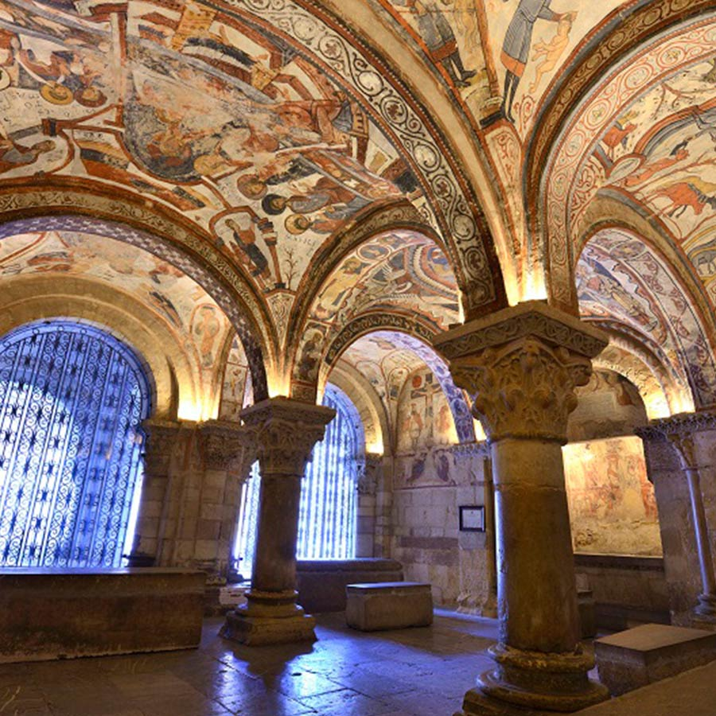Semana SantaAmpliamente arraigada por toda la provincia, la celebración de la Semana Santa tiene su punto neurálgico en la capital provincial. En ella, miles de cofrades pertenecientes a 16 cofradías y hermandades, recorren las calles de la ciudad a lo largo de diez días. Entre sus momentos más significativos están la Ronda y la Procesión de los Pasos, ambos el Viernes Santo, que recibieron mención especial en su declaración como Fiesta de Interés Turístico Internacional en 2002. Asimismo, la noche del Jueves Santo tiene lugar el Entierro de Genarín, celebración pagana en honor de un pellejero de León atropellado en 1929 mientras hacía sus necesidades en la base de la muralla, lugar donde año tras año recibe homenaje, habiéndose convertido en los últimos años en uno de los eventos más multitudinarios de la Semana Santa. En Astorga, declarada de Interés Turístico Regional y de Interés Turístico Nacional, son ocho cofradías y hermandades las que, junto a la Junta Profomento de la Semana Santa, salen a la calle en estos días, destacando las distintas procesiones que tienen lugar el Viernes Santo. Asimismo, cada año se celebra un certamen de bandas de música que ofrecen un variado repertorio de marchas procesionales. 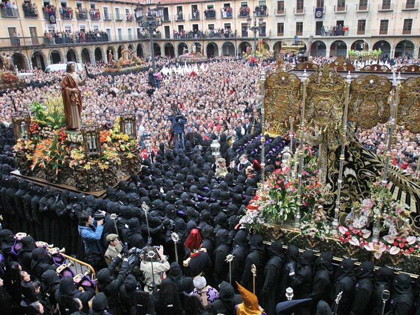Ir arribaNATURALEZALa provincia de León alberga ocho espacios entre los que destacan el parque nacional de Picos de Europa, creado en 1995 a partir de la ampliación del parque nacional de la Montaña de Covadonga, y el Parque Regional de Picos de Europa, creado en 1994. En cuanto a Espacios Naturales están la Sierra de Ancares, ejemplo de convivencia de influencias gallegas, leonesas y cantábricas, Las Médulas, con su característico modelado antrópico fruto de la minería romana, el Valle de San Emiliano, ejemplo de zona de transición entre la flora y fauna eurosiberiana y la mediterránea, y las Hoces de Vegacervera, de alto valor geomorfológico. Por último, los monumentos naturales del lago de La Baña y del lago de Truchillas, que destacan por sus valores botánico, faunístico y geomorfológico pero que en la actualidad se encuentran amenazados por la presencia de explotaciones mineras a cielo abierto. 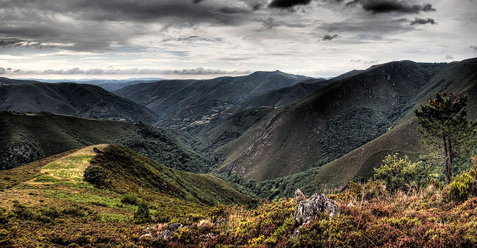Reservas de la biosferaLas áreas catalogadas como Reserva de la biosfera, reconocidas por la Unesco por su interés científico y su riqueza natural y cultural, están representadas en León por siete espacios que ocupan un total de 3 290,253 km² (un 21,12% del total de la superficie provincial). Ir arribaTRADICIONESFiestas y romeriasCronológicamente, en torno a Navidad y Año Nuevo, pervive la tradición del Ramo, consistente en un armazón de madera que se engalana con pañuelos, velas, rosquillas, frutas, cintas de colores y elementos vegetales, al cual se canta una vez llevado a la iglesia. En febrero son numerosas las localidades que celebran las Candelas y las Águedas, en la cual las mujeres toman el poder. De carácter civil son los carnavales, representados a través de diversos personajes como los guirrios, zafarrones, jurrus o maranfallos y a través de desfiles como los de León, Astorga o La Bañeza. Con la llegada de la primavera tienen lugar por toda la provincia numerosas romerías y rogativas entre las que destacan la Pascua en Cacabelos o San Jorge en San Esteban de Nogales. Son también tradicionales las fiestas del Voto, frecuentes en el Páramo, que expresan la gratitud por los favores que el pueblo hubiese recibido de manos de la Virgen o algún santo. El mes de mayo comienza con la celebración de los Mayos, en sus distintas variantes, desde colocar un árbol en la plaza hasta los mayos vivientes de Villafranca del Bierzo, mientras que, paralela a la fiesta profana, se celebra la Cruz de Mayo en distintos puntos de la provincia como en Valderas con su Pastorcica. Durante todo el mes continúan las romerías y rogativas. Sin periodicidad fija, pues se vota cuando lo requiere la sequía, se celebra la romería de Castrotierra, en la que miles de personas y decenas de pendones acompañan a la Virgen del Castro desde su santuario a la Catedral de Astorga y, tras nueve días de rogativas, de nuevo a su santuario. En junio es muy celebrado por toda la provincia el Corpus Christi, destacando los festejos de Laguna de Negrillos. Muy distintas son las Justas Medievales de Hospital de Órbigo, que recuerdan el histórico Paso Honroso de Suero de Quiñones y otros nueve caballeros en 1434. En San Juan son numerosas las localidades que celebran sus fiestas, entre ellas la capital provincial, cuando sus principales fiestas populares tienen lugar. En Astorga, y cada tres años, se conmemora la victoria cristiana de la batalla de Clavijo mediante un desfile en el que el Pendón de Clavijo, acompañado por autoridades y la Guardia Zuiza, se traslada a la catedral en acción de gracias. A principios de agosto se celebra Nuestra Señora de las Nieves, siendo numerosas las localidades de la montaña leonesa las que festejan tal fecha como las romerías de Puebla de Lillo o Páramo del Sil. A mediados de mes son las festividades de la Asunción y San Roque, celebradas en la provincia por más de un centenar de localidades en fiestas y romerías como la de Pandorado, a la que acude toda la comarca de Omaña. A finales de agosto Astorga celebra sus fiestas patronales en honor de Santa Marta mientras que otras romerías, como la de la Virgen de los Remedios en Barrillo de las Arrimadas, congregan a cientos de fieles por distintos puntos de la provincia. 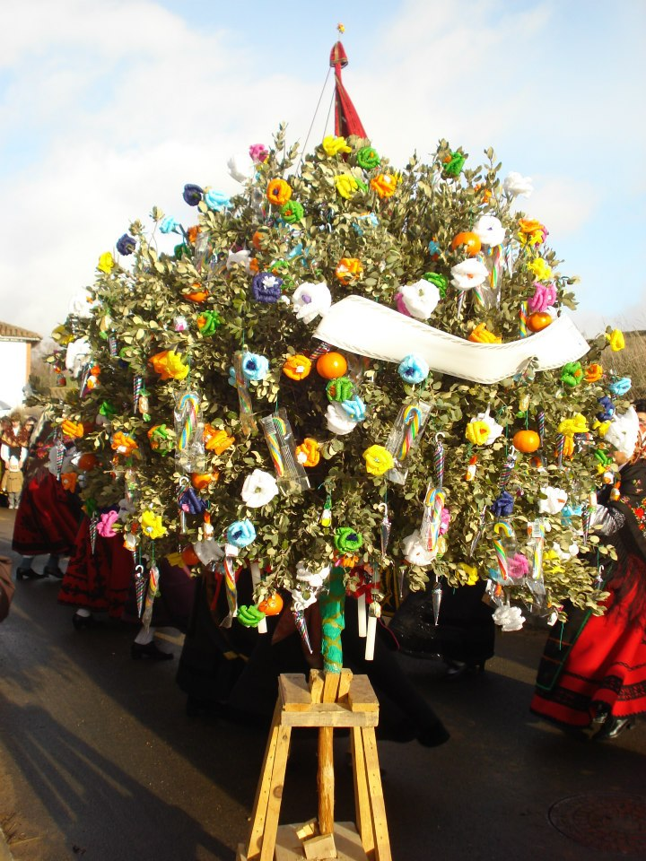TradicionesPendones leonesesLos pendones son grandes enseñas compuestas por una vara o mástil, que puede medir entre 3 y 14 metros, y una tela de seda adamascada en franjas que combinan varios colores. El peso de todo el conjunto oscila entre los 15 y los 35 kilogramos y para ayudar a su desplazamiento dispone de los llamados "remos", cordones que se fijan a lo alto de la vara. Los colores más usuales son el carmesí, el verde, el blanco y el azul. Actualmente, los pendones siguen siendo insignias de los concejos pero en muchas ocasiones ligados con las parroquias, saliendo a la calle en procesiones religiosas y romerías 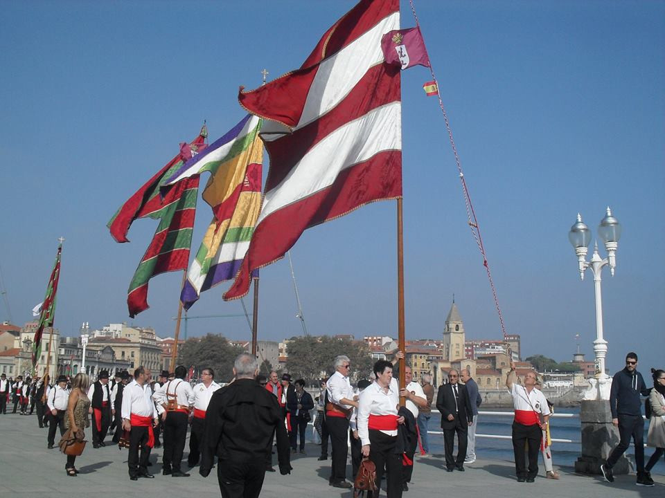Ramo leonesEl ramo leonés de Navidad es un elemento decorativo, utilizado durante las fiestas navideñas en distintos lugares de la provincia, que se ofrecía a la Virgen María durante la misa de Gallo. Sus orígenes parecen remontarse a la época precristiana, en la que tenía un carácter votivo, siendo un símbolo pagano asimilado por la Iglesia desde la Edad Media. Del ramo natural evolucionó a una estructura de madera, y de las iglesias pasó a usarse en los hogares, de modo similar al árbol de Navidad. El ramo consiste en un soporte de madera con una estructura en la que se colocan doce velas y de la que cuelgan distintas ofrendas como cintas bordadas, lazos, hilos de lana, puntillas, rosquillas o frutas. Los tipos de ramo son variados pero, en general, se puede hablar de cuatro especialmente; el triangular (característico de la Ribera y el Páramo), el redondo (abundante en Omaña), el ovalado o en forma de cola de pavo real, y el llamado "rastro", similar al apero agrícola. 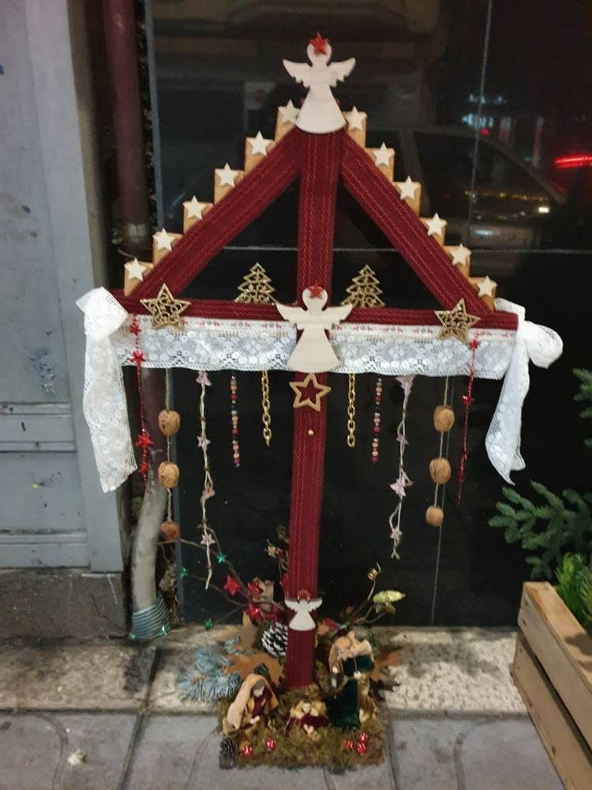FilandonEl filandón era una tradición consistente en una reunión, una vez terminada la cena, en la que se contaban cuentos en voz alta a la vez que se trabajaba en alguna labor manual, generalmente textil. Dicha reunión se solía hacer alrededor del hogar, con los participantes sentados en escaños o bancadas. Además de la provincia leonesa, es también tradición en algunas zonas de Galicia y Asturias. Ir arribaOTROS ASPECTOS DE INTERESGastronomiaEntre las carnes frescas destacar la carne de vacuno Montañas del Teleno y el lechazo Montañas del Teleno, ambas protegidas por una Marca de Garantía. En los embutidos y carnes curadas están el Botillo del Bierzo, la Cecina de León y la Cecina de chivo de Vegacervera. Entre los quesos y lácteos destaca el queso de Valdeón. Entre las legumbres la alubia de La Bañeza y entre las frutas y verduras mencionar la denominación de origen manzana reineta del Bierzo, la pera conferencia del Bierzo, el pimiento asado del Bierzo y el pimiento de Fresno y Benavente y el puerro de Sahagún. 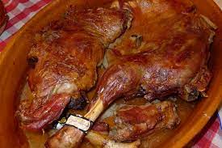Entre los platos cocinados destacan la sopa de trucha, la morcilla y el característico cocido maragato, cuya principal peculiaridad es que se come al revés, empezando por las carnes para terminar con la sopa. En cuanto a la panadería y repostería, destacan las mantecadas de Astorga, los hojaldres de Astorga, los lazos de San Guillermo de Cistierna, los imperiales de La Bañeza y los nicanores de Boñar. 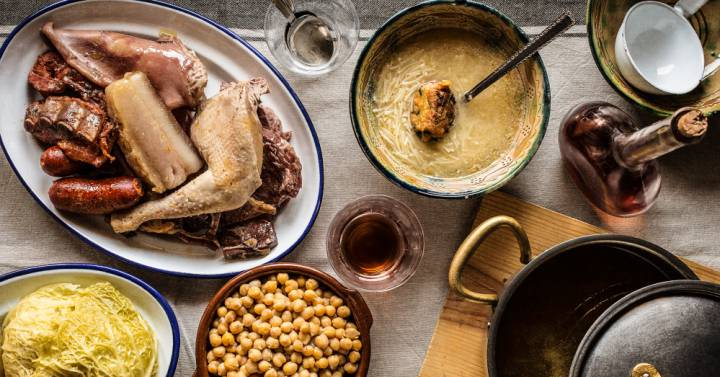FaunaLa provincia cuenta con una fauna rica y variada debido a su situación de transición entre el mundo mediterráneo y el eurosiberiano y entre la llanura y la montaña. Así, en cuanto a los íctidos, las aguas leonesas sustentan especies autóctonas como trucha común, tenca y barbo o alóctonas como el lucio. En relación con los distintos medios acuáticos están presentes anfibios como el tritón jaspeado, mamíferos como el desmán o la nutria, y aves como distintas especies de ánades y lavanderas o el martín pescador. En las zonas llanas de la provincia se encuentran aves como la avutarda o el cernícalo y pequeños mamíferos como la liebre y, en zonas arboladas, la comadreja o el armiño. En el entorno de los núcleos de población son comunes las cigüeñas blancas, la golondrina, distintas especies de páridos, las grajas, que en España tan sólo se reproducen en la zona centro-sur de la provincia, o rapaces como el milano real. En las zonas que dan paso a campiñas o bosques están presentes mamíferos como el jabalí, el zorro, el corzo o el lobo. Por último, en las zonas de montaña, ya sea en pastizales o en bosques, habitan el ciervo, la cabra montés, el rebeco, la perdiz pardilla o la garduña y aves como el águila real. Sin embargo, las especies más emblemáticas dentro de la provincia son el oso pardo y el urogallo. El primero, se extiende dentro de la provincia y en su núcleo oriental ocupa la Montaña de Riaño. Amenazado de peligro de extinción, en los últimos años su población se ha incrementado gracias al apoyo de las administraciones y el trabajo de organizaciones como la Fundación Oso Pardo con proyectos de conservación y educación medioambiental. En cuanto al urogallo, desde principios de los años ochenta ha venido sufriendo un retroceso de su población de hasta el 70 % debido a la fragmentación de su hábitat, la baja tasa de reproducción y el alto grado de depredación por lo que se están llevando a cabo programas de conservación mediante mejoras del hábitat o cría en cautividad. 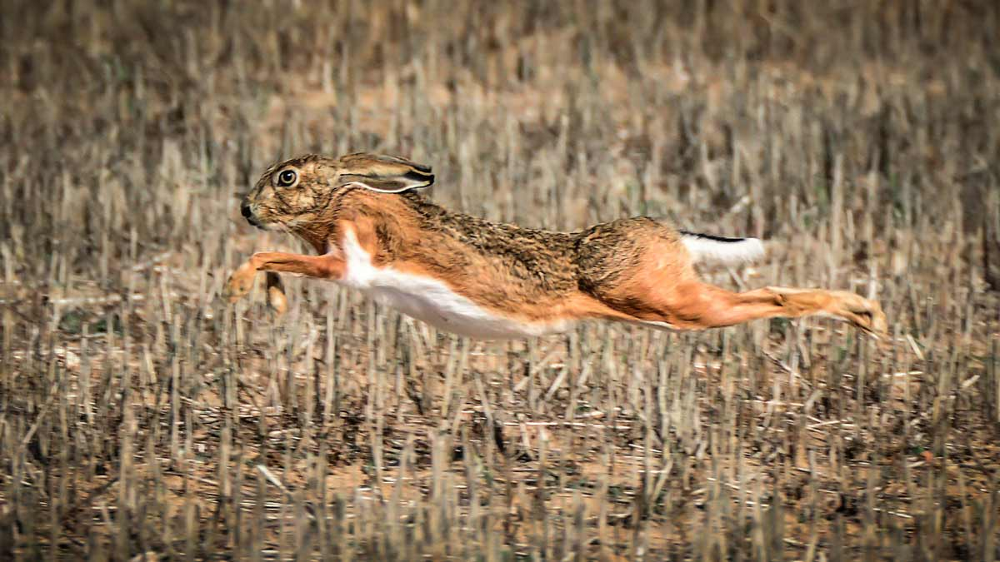FloraLa flora de la provincia de León es muy variada, con unas 3000 especies distintas que representan el 20 % de las que se pueden encontrar en la península ibérica. Las formaciones vegetales presentes muestran una diferenciación entre la llanura y la montaña, aunque en ambos dominios predominan las especies mediterráneas y de transición a la vegetación atlántica. Tras la última glaciación, se implantó un clima más árido propiciando el desarrollo de vegetación xerófila y así, el hayedo retrocedió a las montañas Cantábricas. Allí donde este se retiró, se implantó la encina, estando actualmente presente solo en rodales dispersos ya que la mayor parte desapareció al sustituirse por tierras de cultivo. En cuanto a la montaña, ofrece matices como la altura, la temperatura o la humedad. Hasta los 1400 metros de altitud se desarrollan los rebollares que enlazan con las repoblaciones de pino silvestre y en la base con los robledales de carballo y albar, con los bosques de castaños en El Bierzo o los hayedos de las montañas Cantábricas. 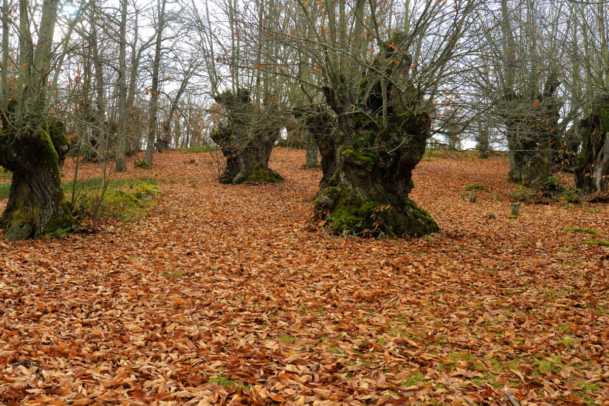 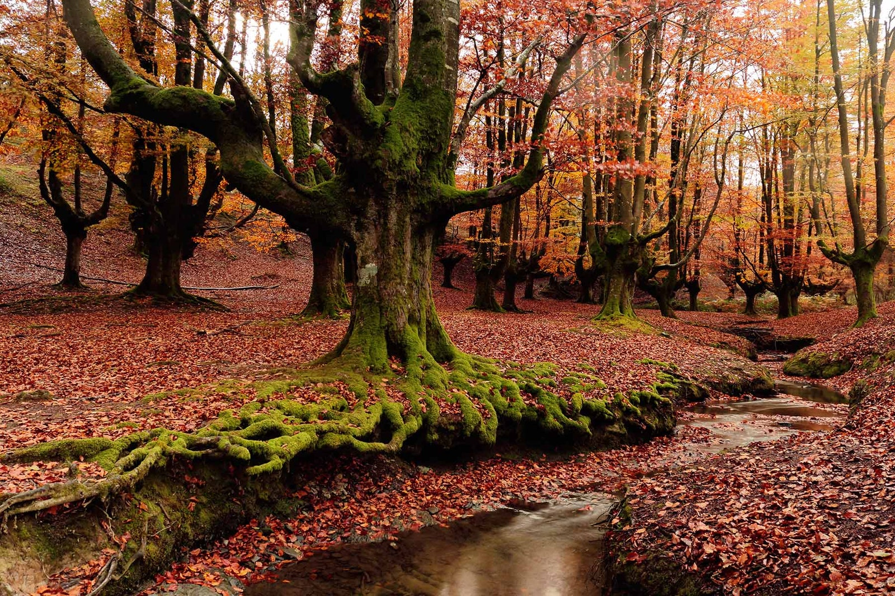Bosque de LeonIr arriba |
| Burgos | |
| León | |
| Palencia | |
| Salamanca | |
| Segovia | |
| Soria | |
| Valladolid | |
| Zamora | |
| Pagina de contacto |